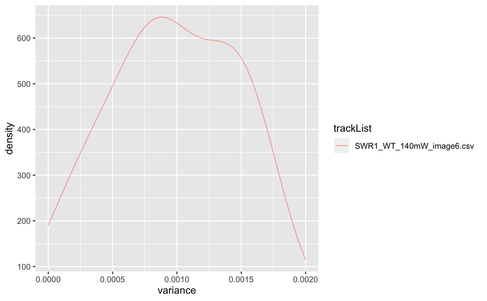
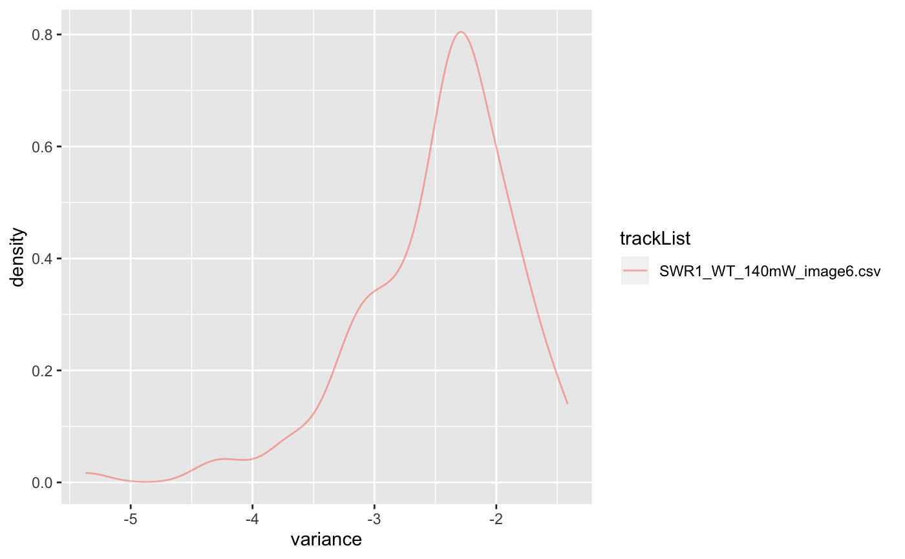
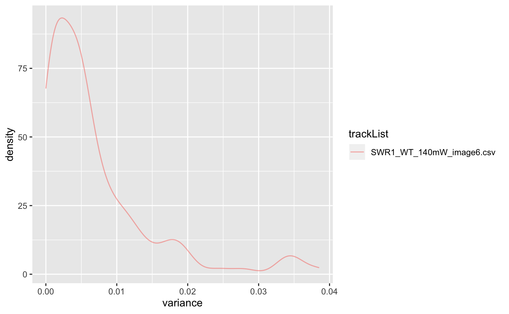

calculate square displacements for all tracks in a trackll datatype, and return the variances for the dispacements of each trajectories.
dispVariance(trackll, min=7, plot=FALSE, limits=c(), log=FALSE, output=FALSE)
| trackll | a list of track lists. |
|---|---|
| min | minimum points on trajectory, should be at least 3 to work. |
| plot | default: False, if true, show density plot for variances. |
| limits | vector of size2, variance cut-off range that one wants to plot. This will not affect the returned result. |
| log | default: False, if true, apply log10 to variance value for new spread. like limits, this will only affect the plot, not the returned value. |
| output | if True, generate a csv output for each tracklist files that are in trackll. |
Variances calculated variacne for all trakcs in trackll
dispVariance applies the squareDisp function to each dataframe containing trajectories. the tracks somehow had to be converted into dataframes although they were expected to be in dataframes in the first place.
Since the tracks of shorter length are filtered out in the process, there is no guqrante that the length of tracklists equal that of the input.
The tracks should have length of at least 3, in order to have a valid displacement variance. If min argument is less than 3, the function will not be executed.
Generally, when plotting, you would want to use only one of limits or log. Although you may use both, using only one of the two would do the job.
folder=system.file('extdata','SWR1',package='sojourner') trackll=createTrackll(folder=folder, input=3)#> #> Reading ParticleTracker file: SWR1_WT_140mW_image6.csv ... #> #> mage6 read and processed. #> #> Process complete.# run dispVariance with default minimum tracklength (min=7) dispVars = dispVariance(trackll)#> applying filter, min 7 max Inf# run dispVariance by setting the minimum tracklength to 3 dispVars = dispVariance(trackll, min=3)#> applying filter, min 3 max Inf#> applying filter, min 7 max Inf#> Warning: Removed 37 rows containing non-finite values (stat_density).#> $SWR1_WT_140mW_image6.csv #> $SWR1_WT_140mW_image6.csv$mage6.4.9.3.3 #> [1] 0.009771136 #> #> $SWR1_WT_140mW_image6.csv$mage6.5.8.4.4 #> [1] 0.03486468 #> #> $SWR1_WT_140mW_image6.csv$mage6.11.12.5.5 #> [1] 0.01983681 #> #> $SWR1_WT_140mW_image6.csv$mage6.12.9.6.6 #> [1] 0.01995962 #> #> $SWR1_WT_140mW_image6.csv$mage6.19.7.8.8 #> [1] 0.01103843 #> #> $SWR1_WT_140mW_image6.csv$mage6.24.10.10.10 #> [1] 0.005763752 #> #> $SWR1_WT_140mW_image6.csv$mage6.24.18.11.11 #> [1] 0.01763963 #> #> $SWR1_WT_140mW_image6.csv$mage6.28.9.12.12 #> [1] 0.01350686 #> #> $SWR1_WT_140mW_image6.csv$mage6.35.8.14.14 #> [1] 0.002251353 #> #> $SWR1_WT_140mW_image6.csv$mage6.48.7.20.20 #> [1] 0.001423165 #> #> $SWR1_WT_140mW_image6.csv$mage6.54.7.22.22 #> [1] 0.004865172 #> #> $SWR1_WT_140mW_image6.csv$mage6.62.30.27.27 #> [1] 0.008121523 #> #> $SWR1_WT_140mW_image6.csv$mage6.98.13.37.37 #> [1] 0.01101364 #> #> $SWR1_WT_140mW_image6.csv$mage6.122.10.42.42 #> [1] 0.004704239 #> #> $SWR1_WT_140mW_image6.csv$mage6.149.15.49.49 #> [1] 0.005158485 #> #> $SWR1_WT_140mW_image6.csv$mage6.172.9.53.53 #> [1] 0.004001837 #> #> $SWR1_WT_140mW_image6.csv$mage6.204.8.61.61 #> [1] 0.01108752 #> #> $SWR1_WT_140mW_image6.csv$mage6.217.8.63.63 #> [1] 0.004870432 #> #> $SWR1_WT_140mW_image6.csv$mage6.234.9.67.67 #> [1] 0.005268978 #> #> $SWR1_WT_140mW_image6.csv$mage6.418.20.72.72 #> [1] 0.0004713732 #> #> $SWR1_WT_140mW_image6.csv$mage6.454.9.77.77 #> [1] 0.0001909575 #> #> $SWR1_WT_140mW_image6.csv$mage6.812.9.88.88 #> [1] 0.003436043 #> #> $SWR1_WT_140mW_image6.csv$mage6.826.7.90.90 #> [1] 0.01015576 #> #> $SWR1_WT_140mW_image6.csv$mage6.834.7.91.91 #> [1] 0.0008829278 #> #> $SWR1_WT_140mW_image6.csv$mage6.962.10.106.106 #> [1] 0.004969754 #> #> $SWR1_WT_140mW_image6.csv$mage6.973.29.107.107 #> [1] 0.005521079 #> #> $SWR1_WT_140mW_image6.csv$mage6.1003.11.108.108 #> [1] 0.003825312 #> #> $SWR1_WT_140mW_image6.csv$mage6.1429.7.112.112 #> [1] 0.01201197 #> #> $SWR1_WT_140mW_image6.csv$mage6.1449.7.115.115 #> [1] 0.006824986 #> #> $SWR1_WT_140mW_image6.csv$mage6.1457.7.116.116 #> [1] 0.0008334944 #> #> $SWR1_WT_140mW_image6.csv$mage6.1539.10.125.125 #> [1] 0.003508424 #> #> $SWR1_WT_140mW_image6.csv$mage6.1973.7.130.130 #> [1] 0.00155374 #> #> $SWR1_WT_140mW_image6.csv$mage6.1991.12.132.132 #> [1] 0.008562371 #> #> $SWR1_WT_140mW_image6.csv$mage6.2028.8.136.136 #> [1] 0.003540245 #> #> $SWR1_WT_140mW_image6.csv$mage6.2099.7.153.153 #> [1] 0.005973512 #> #> $SWR1_WT_140mW_image6.csv$mage6.2140.10.164.164 #> [1] 0.004009632 #> #> $SWR1_WT_140mW_image6.csv$mage6.2146.12.166.166 #> [1] 0.00148892 #> #> $SWR1_WT_140mW_image6.csv$mage6.2204.9.175.175 #> [1] 0.002511458 #> #> $SWR1_WT_140mW_image6.csv$mage6.2228.11.179.179 #> [1] 0.002461107 #> #> $SWR1_WT_140mW_image6.csv$mage6.2259.11.183.183 #> [1] 0.002962166 #> #> $SWR1_WT_140mW_image6.csv$mage6.3194.8.185.185 #> [1] 0.008298419 #> #> $SWR1_WT_140mW_image6.csv$mage6.3231.7.186.186 #> [1] 0.0009083675 #> #> $SWR1_WT_140mW_image6.csv$mage6.3505.8.193.193 #> [1] 0.005289314 #> #> $SWR1_WT_140mW_image6.csv$mage6.3514.9.194.194 #> [1] 0.007983326 #> #> $SWR1_WT_140mW_image6.csv$mage6.3525.15.195.195 #> [1] 0.006380299 #> #># display plot with log-scale applied dispVars = dispVariance(trackll, min=3, plot=TRUE, log=TRUE)#> applying filter, min 3 max Inf# display plot. Could get csv files if output = TRUE dispVars = dispVariance(trackll, min=3, plot=TRUE, output=FALSE)#> applying filter, min 3 max Inf